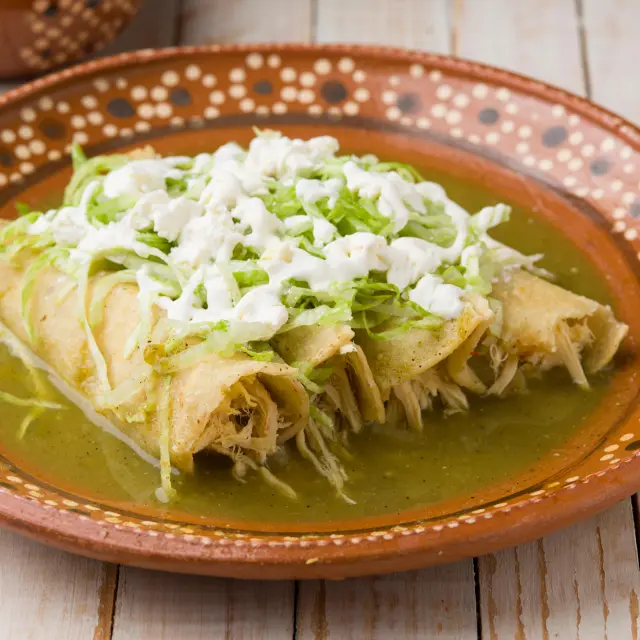
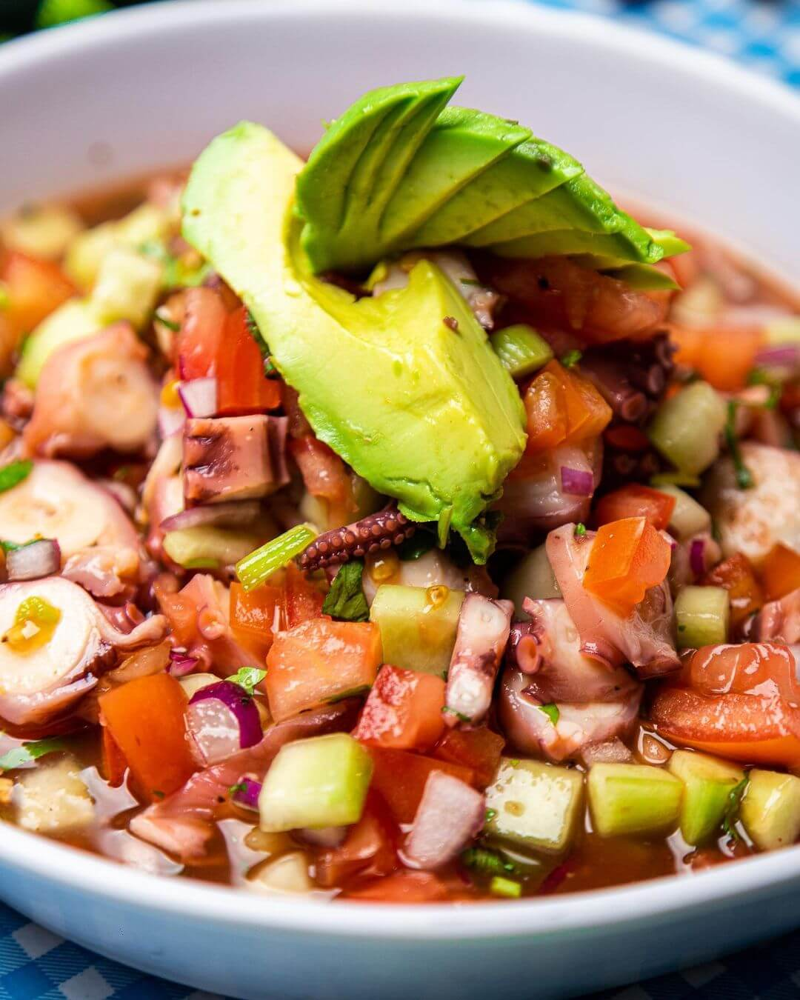

Receta 1: Tacos al Pastor

INGREDIENTES:
- 1 kg de cabeza de lomo de cerdo cortado en filetes de 1/3 de pulgada
- ¼ taza de vinagre blanco
- 1 lata de piña en rebanadas
- 1 manojo de cilantro de tamaño mediano lavado y finamente picado
- 30g de chiles guajillo limpios y sin semillas (alrededor de 4 chiles)
- 30 g de pasta de achiote
- ¼ taza de jugo de piña (se puede utilizar jugos de lata de piña en rodajas)
- 3 dientes de ajo, 1 cdita. de orégano, 1/2 cdita. de comino, ¼ cdita. de pimienta negra, 2 clavos de olor y Sal y pimienta para sazonar la carne
- 1 cebolla blanca de tamaño medio cortada en rodajas
- Tortillas de maíz
- 1 cebolla mediana finamente picada y Salsa picante de tu elección
PREPARACION:
- Coloca los chiles en una olla y cubre con agua. Hierve a fuego medio durante unos 15 minutos o hasta que estén suaves. Deja que se enfríen y, finalmente, retira el agua.
- Coloca los chiles, el vinagre, el jugo de piña con las especias y la pasta de achiote en la licuadora. Licua hasta que se forme una salsa muy suave.
- Vacía la salsa lentamente a través de un colador fino para obtener una textura homogénea agradable. Prueba la salsa para asegurar que la sal sea suficiente.
- Sazona la carne con sal y pimienta. Coloca la salsa y los filetes en un tazón grande, marina la carne o utiliza una brocha pastelera para aplicar la salsa a cada lado de los filetes.
- Marina por lo menos 4 horas o dejar durante toda la noche.
- Una vez que la carne esté marinada, córtala en pequeñas tiras finas, retira cualquier salsa adobo en exceso.
- Calienta la sartén y agrega 1 o 2 cdas. de aceite hasta que esté caliente; lo suficiente para que cuando se coloque la carne salpique un poco.
- Agrega las rodajas de cebolla y piña a lo largo de la carne para cocinar. Además asegúrate de voltear la carne según sea necesario para evitar que la carne se pegue a la sartén.
- Cocina de unos 12 a 15 minutos.
- Corta la carne finamente y prepara los tacos con cebolla, cilantro, piña y la salsa que más te guste.
- Utiliza esta receta para preparar tortas, pizzas… ¡tu imaginación es tu límite! Disfruta de un platillo reconocido en todo el mundo.
Receta 2: Enchiladas Verdes

INGREDIENTES:
- 12 Tortillas de Maíz Guerrero
- 1 pechuga de pollo entera, de unas 12 oz. (375 g) cocinada y desmenuzada
- 1 1/2 taza de caldo de pollo
- 2 dientes de ajo
- 1 cebolla pequeña
- Sal al gusto
- 2-4 chiles serranos
- 2 lb (1 kilo) de tomatillos verdes sin cáscara
- 1/2 taza de cilantro picado
- 1 cda. de aceite
- Aceite para freír
- 1/2 taza de crema espesa (opcional)
- 1/2 taza de queso feta desmenuzado (opcional)
PREPARACION:
- 1. Pon dos dientes de ajo y los chiles en una olla con agua hirviendo. Luego de 5 minutos, añade los tomatillos verdes y cocina por otros 7 minutos. Escurre.
- 2. En una licuadora, haz un puré con los jitomates verdes, el ajo, los chiles y el cuarto de cebolla. Añade el cilantro y mezcla ligeramente para que el cilantro no se muela demasiado. Agrega una taza del caldo de pollo.
- 3. Calienta el aceite en una sartén pequeña y sofríe el puré de tomatillos verdes. Añade 1 cdta. de sal. Baja el fuego y cocina sin tapar por 10 minutos. Si la salsa queda demasiado espesa, agrega otra 1/2 taza de caldo.
- 4. En una sartén, calienta la mitad de la salsa. Aparte, fríe las tortillas en aceite hasta que comiencen a ablandarse, unos 10 segundos por cada lado.
- 5. Moja cada tortilla en la salsa tibia y ponlas en un plato semi extendido. Coloca una porción de pollo en el centro de cada tortilla, y enrolla. Con una cuchara, vierte la salsa tibia sobre las enchiladas y cubre con la cebolla en rebanadas. Añade crema y queso feta, si lo deseas.
Receta 3: Pozole Rojo

INGREDIENTES:
- Para el pozole:
500 g de maíz cacahuazintle (precocido o enlatado), 1 kg de carne de cerdo (pierna o espaldilla), cortada en trozos grandes, 1 cebolla grande, cortada en cuartos, 4 dientes de ajO, 2 hojas de laurel, Sal al gusto Y 3 litros de agua.
- Para la salsa roja:
6 chiles guajillos, desvenados y remojados, 4 chiles anchos, desvenados y remojados, 2 dientes de ajo, 1/2 cebolla, 1 cucharadita de orégano seco Y 1/2 cucharadita de comino molido.
- Sal al gusto:
Para acompañar Lechuga finamente picada, Rábanos en rodajas, Cebolla blanca picada, Orégano seco, Jugo de limón Y Tostadas o tortillas de maíz
PREPARACION:
- Cocina el maíz y la carne: En una olla grande, agrega el maíz cacahuazintle, la carne de cerdo, cebolla, ajo, hojas de laurel y sal. Cubre con agua y cocina a fuego medio durante 1.5-2 horas, o hasta que el maíz esté tierno y la carne se deshaga fácilmente.
- Prepara la salsa roja: Licúa los chiles remojados, ajo, cebolla, orégano, comino y sal con un poco del agua de cocción del pozole hasta obtener una salsa suave. Cuela la salsa para eliminar impurezas.
- Incorpora la salsa al pozole: Agrega la salsa roja a la olla con el maíz y la carne. Cocina a fuego lento durante 20-30 minutos para que los sabores se integren. Ajusta la sal si es necesario.
- Deshebra la carne: Retira los trozos de carne de la olla, deshébrala con dos tenedores y regrésala al pozole.
- Sirve: Sirve el pozole caliente en tazones grandes. Acompaña con lechuga, rábanos, cebolla, orégano, jugo de limón y tostadas.
CONSEJOS PARA UN POZOLE PERFECTO:
- Usa maíz cacahuazintle: Este tipo de maíz es esencial para lograr la textura tradicional del pozole. Si no lo encuentras fresco, puedes usar maíz enlatado.
- Remoja los chiles: Remojar los chiles en agua caliente durante 20 minutos ayuda a suavizarlos y facilita la preparación de la salsa.
- Ajusta el picante: Si prefieres un pozole menos picante, reduce la cantidad de chiles guajillos y anchos.
- Prepara con anticipación: El pozole sabe aún mejor al día siguiente, ya que los sabores se intensifican.
Receta 4: Chiles en Nogada

INGREDIENTES:
- 8 chiles poblanos pelados y desvenados
- 600 g de carne molida
- 1 plátano macho
- 1 durazno
- 2 manzanas chicas (o una grande)
- ½ cebolla picada
- 2 dientes de ajo picados
- ¾ taza de pasas
- ¾ taza de almendras fileteadas
- 1 taza de nuez
- 100 g queso crema
- 100 g de queso de cabra
- 500 ml de crema para batir
- 1 taza de leche
- 2 cucharadas de azúcar
- 1 granada (desgranada)
- ½ taza de piñones
- Aceite vegetal
- Sal al gusto
PREPARACION:
- Corta todas las frutas en cubitos.
- Tuesta las almendras y los piñones.
- Pica el ajo y la cebolla, y acitrona en un poco de aceite vegetal.
- Agrega la carne y sazona con sal y pimienta.
- Cuando esté bien cocida la carne, se reserva.
- En el mismo sartén agrega un poco más de aceite y fríe las frutas, empezando por el plátano.
- Cuando las frutas empiecen a soltar los jugos, retira del fuego y agrega la carne, al igual que las almendras, los piñones y las pasas.
- Revuelve todo y se deja cocinar tres minutos más a fuego medio. Se retira del fuego y se deja enfriar.
- Licúa los quesos, la crema, la leche y las nueces en la licuadora.
- Para servir, vierte la crema en el plato, coloca los chiles encima, rellena con la carne y cubre con la granada y nueces picadas. *También se acostumbra agregar perejil picado a la decoración.
Receta 5: Mole Poblano

INGREDIENTES:
- 500 gramos de chiles mulatos
- 750 gramos de chiles pasillas
- 750 gramos de chiles anchos (las tres variedades de chiles van desvenados y despepitados)
- 450 gramos de manteca de cerdo
- 5 dientes de ajo medianos
- 2 cebollas medianas rebanadas
- 4 tortillas duras partidas en cuatro
- 1 bolillo frito bien dorado
- 125 gramos de pasitas
- 250 gramos de almendras
- Pepitas de chile al gusto
- 150 gramos de ajonjolí
- ½ cucharada de anís
- 1 cucharadita de clavo en polvo o 5 clavos de olor
- 25 gramos de canela en trozo
- 1 cucharadita de pimienta negra en polvo o 6 pimientas enteras
- 4 tabletas de chocolate de metate
- 250 gramos de jitomate pelado y picado
- Azúcar y sal al gusto
- 1 guajolote o pavo grande partido en piezas y cocido en un buen caldo hecho con zanahorias, poro, cebolla, una rama de apio, perejil y un diente de ajo
PREPARACION:
- Los chiles se pasan por 300 gramos de manteca caliente, se colocan en una cazuela con agua muy caliente y se deja que den un hervor para que se suavicen.
- En la misma manteca se acitronan el ajo y la cebolla, se añaden la tortilla, el pan, las pasas, las almendras, las pepitas de chile, la mitad del ajonjolí, el anís, el clavo, la canela, las pimientas, el chocolate y el jitomate y se fríe todo muy bien; se agregan los chiles escurridos y se fríe unos segundos más.
- Todo lo anterior se muele en la licuadora con el caldo donde se coció el pavo y se cuela. En una cazuela de barro especial para mole se pone a calentar el resto de la manteca, se añade la salsa, se deja hervir el mole durante cinco minutos, se sazona con sal y azúcar y, si es necesario, se añade más caldo; debe quedar una salsa espesa. Se deja hervir de 25 a 30 minutos más a fuego lento, se añaden los trozos de guajolote y se deja hervir unos minutos más.
Receta 6: Sopes

INGREDIENTES:
- 3 cucharadas de manteca de cerdo
- 6 sopes
- 1 taza de frijoles refritos
- 1 receta de salsa verde cruda o salsa roja de jitomate
- 2 tazas de lechuga rebanada finamente
- 1 taza de pollo cocido y deshebrado
- 3 cucharadas de cebolla blanca picada
- ⅓ de taza de cilantro picado (opcional)
- 6 cucharadas de crema espesa (opcional)
- 6 cucharadas de queso fresco rallado
PREPARACION:
- Para mí, éste es el antojito típico de la ciudad de México.
- El auténtico sope es una tortilla ovalada como de 15 centímetros de largo, con orilla para sostener la salsa y los rellenos. Actualmente, en los supermercados y en los mercados populares venden los sopes de unos 9 centímetros de largo.
- La influencia del Distrito Federal ha llegado a muchas regiones y por esto llaman a estos antojitos de otras formas o los hacen redondos, pero que quede asentado que el sope original es ovalado. Aunque se les encuentra por la mañana, recuerdo que hace tiempo los sopes se vendían por las noches para la cena.
Receta 7: Ceviche

INGREDIENTES:
- Filetes sin piel de huachinango
- Jugo de limón
- Sal
- Cebolla
- Chiles serranos
- Cilantro
- Orégano
- Jitomates grandes
- Aceitunas verdes
- Aguacate
- Aceite de oliva
- Salsa Catsup
- Salsa Tabasco
- Galletas saladas
PREPARACIOM:
- Primero, en un recipiente de vidrio marina el pescado con el jugo de limón y la sal. Deja que se macere en el refrigerador mientras picas el resto de las verduras. Escurre muy bien el jugo. Agrega los jitomates, los chiles, la cebolla, el cilantro y el orégano. Prueba y agrega sal si es necesario. Deja marinar durante un par de horas en el refrigerador.
- Para servir, llena tazones pequeños o copas, y decora con el aguacate y las aceitunas verdes. Si utilizas salsa catsup y aceite de oliva, revuelve éstos antes de decorar. La cantidad de salsa Tabasco dependerá del gusto de cada comensal.
- Sirve con galletas saladas o totopos.
Receta 8: Arroz a la Mexicana
INGREDIENTES:
- Arroz blanco
- Aceite vegetal
- Caldo de pollo
- Jitomate grande
- Cebolla blanca
- Diente de ajo picado
- Sal al gusto
- Zanahoria, finamente picada
- Taza chicharos
- Cilantro
- Chile Serrano
PREPARACION:
- Coloca el arroz en un recipiente grande y vierta agua caliente hasta cubrirlo, revuélvalo una vez; luego deja reposar durante 5 minutos.
- Escúrralo con un colador sobre el fregadero, enjuagalo con agua fría, y luego vuelva a escurrir. Agita bien el colador para eliminar el exceso de agua y deja secar ligeramente. Si utiliza chicharos verdes congelados, descongélalos antes de tiempo. Para este arroz, usa 1 taza de chicharos verdes; esta es una elección personal, también puedes agregar zanahorias si lo desea.
- Calienta el aceite en una cacerola grande, agrega el arroz, debe chisporrotear mientras toca el aceite; cocine a fuego medio hasta que comience a convertirse a un color marrón dorado; este paso durará de 8 a 10 minutos, revuelva de vez en cuando para asegurarte de que el arroz no se pegue a la parte inferior de la cacerola.
- Con cuidado, incline la sartén y elimine el exceso de aceite con una cuchara.
- Mientras tanto, vierta los jitomates, el ajo y la cebolla en la licuadora, licúa hasta que quede suave.
- Agrega la mezcla de jitomate al arroz y revuelva a fuego medio-alto
- Mantenga la cocción hasta que toda el agua haya sido absorbida asegurándote de que no se adhiera a la parte inferior de la cacerola. Te tardarás unos 5 minutos para este paso
- Agregue el caldo y las verduras “zanahorias, chicharos verdes, chiles serrano y cilantro” (opcionales) y sal al gusto. Cubra la cacerola y cocine a fuego medio hasta que toda el agua haya sido absorbida.
- Utilizando un tenedor, cuidadosamente cava hasta el fondo del arroz para ver si queda humedad; Si es así, continúe cocinando a fuego lento durante unos minutos más, aún cubiertos, hasta que estén tiernos. Retira la cacerola del fuego, sin destaparla, y déjala reposar durante 10-15 minutos, para darle al arroz la oportunidad de seguir secando. Usando un tenedor, levemente esponja el arroz y sírvalo.
Receta 9: Guacamole

INGREDIENTES:
- 6 aguacates
- 3 cucharadas de leche
- 1 cebolla
- 2 chiles serranos
- 1 manojo de cilandro
- sal de mar
- totopos
PREPARACION:
- Picar finamente el cilantro y la cebolla.
- Hacer tiras finas del chile serrano sin semillas.
- En un molcajete poner la pulpa del aguacate y mezclar con cilantro, cebolla, sal y leche. Añadir las tiritas de chile serrano.
- Servir con totopos.